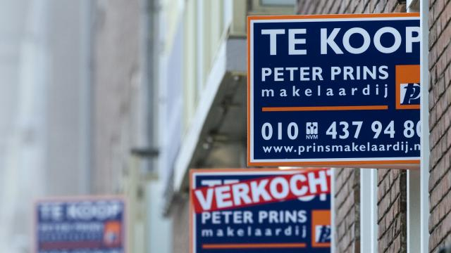

Algemeen
Grootste prijsstijging koopwoningen in bijna acht jaar

Bestaande koopwoningen waren in januari 4,1 procent duurder dan een jaar
eerder. Dit is de grootste prijsstijging in bijna acht jaar tijd.
In maart 2008 is de gemiddelde prijs van bestaande koopwoningen voor het
laatst met 4,1 procent op jaarbasis gestegen, blijkt vrijdag uit gegevens
van het Kadaster.
De gemiddelde prijs lag vorige maand 7,9 procent hoger dan juni 2013. In
die maand bereikte de huizenprijs een voorlopig dieptepunt (206.114 euro).
Vergeleken met de piek in augustus 2008 (261.948 euro) zijn huizen nu nog
15,3 procent goedkoper.
Sinds de zomer van 2013 is er sprake van een stijgende trend. Inmiddels
ligt de gemiddelde prijs weer even hoog als juni 2004.
Woningverkopen
Eerder deze maand meldde het Kadaster dat er in januari 26,2 procent meer
woningen zijn verkocht dan een jaar eerder. Het ging vorige maand om
11.907 woningen.
De stijging ten opzichte van het voorgaande jaar was met name zichtbaar in
Flevoland. In Zeeland, Drenthe en Overijssel zijn de verkopen juist gedaald.
Door: Nu.nl
Binnenland
Ongelukken zorgen voor files in Noord-Holland

Meerdere ongelukken zorgen vrijdagmiddag voor flinke vertraging op de weg.
In Noord-Holland staat het op meerdere plekken stil.
Op de A9 naar Alkmaar zorgt een ongeluk tussen twee vrachtauto's en een
personenauto ervoor dat het verkeer stilstaat. Omrijden wordt aanbevolen,
aldus de VerkeersInformatieDienst (VID). Inmiddels is er een file van 7
kilometer ontstaan.
De A7 naar Hoorn is momenteel ook dicht door een ongeluk met een vrachtauto
en twee personenauto's. Verkeer kan daar alleen rijden via de op- en afrit.
Ter hoogte van Zaandijk is alleen de vluchtstrook open.
Eerder vrijdagmiddag ging het al mis op de provinciale weg N506 tussen Hoorn
en Schellinkhout, daar waren vier auto's bij betrokken. De weg is in beide
richtingen dicht.
Ook op andere plekken in het land staan files door ongevallen. Na een ongeluk
op de A27 bij Lunetten waren drie rijstroken dicht. Ook op de A12 en de A2
ontstonden daardoor files. Inmiddels is de weg weer vrij.
Ook op de A2 naar Maastricht zijn twee rijstroken dicht door een ongeval met
twee auto's tussen de knooppunten Batadorp en De Hogt.
Door: NU.nl
Buitenland
Voortplantingsdrift Italianen in het slop
De Italiaanse bevolking krimpt. Vorig jaar werden er minder kinderen geboren
dan in enig ander jaar in de moderne geschiedenis.
Onverwacht steeg bovendien het sterftecijfer aanzienlijk, blijkt uit cijfers
van het Italiaanse centrale statistiekbureau (ISTAT). Sinds 1952 was de
Italiaanse bevolking vrijwel onafgebroken gegroeid.
Het ISTAT wijt de verminderde voortplantingsdrift van de Italiaan aan de
sukkelende economie. "Zoals het gebrek aan positieve vooruitzichten voor
fabrikanten de investeringen remt, zo hinderen de moeilijkheden waarmee jonge
stellen kampen hun plannen om kinderen te krijgen", staat in het demografisch
jaarrapport van het ISTAT.
Het sterftecijfer steeg in 2015 met ruim 9 procent. Sinds de Tweede
Wereldoorlog overleden er niet zoveel Italianen in één jaar. Volgens het
ISTAT waren een winterse griepepidemie en een zomerse hittegolf de
boosdoeners.
De afgelopen jaren vulden immigranten de gaten op die autochtone Italianen
lieten vallen, maar ook hun aantal slonk in 2015.
Door: ANP
Sport
Ajax wellicht met Gudelj als centrale verdediger tegen Excelsior
Ajax-trainer Frank de Boer overweegt Nemanja Gudelj als centrale verdediger
op te stellen in de thuiswedstrijd van aanstaande zondag tegen Excelsior.
De Amsterdammers kunnen tegen de laagvlieger uit Rotterdam geen beroep doen
op de geschorste Mike van der Hoorn en de geblesseerde Kenny Tete en Jairo
Riedewald.
Afgelopen zondag tegen FC Groningen (2-1 winst) werd Gudelj na de rode kaart
van Van der Hoorn ook al enige tijd in de defensie geposteerd, totdat Ricardo
van Rhijn binnen de lijnen kwam en rechtsback Joel Veltman naar het
centrum verhuisde.
Tegen Excelsior maakt De Boer voor de positie naast Nick Viergever een keuze
tussen Veltman en Gudelj. "Gudelj is zeker een optie", bevestigt de
oefenmeester op de persconferentie van de huidige nummer twee van de
Eredivisie. "Al zal dat sneller gebeuren als we met drie verdedigers aantreden."
Riechedly Bazoer geldt niet als alternatief voor de achterhoede, omdat de jonge
middenvelder daar nog niet klaar voor zou zijn. "In organisatorisch opzicht moet
hij daar nog wat stappen in maken."
Lastig
De Rotterdamse bezoekers van trainer Alfons Groenendijk wisten al elf
competitieduels op rij niet te winnen, maar vormen volgens De Boer wel een
geduchte tegenstander voor Ajax.
"Excelsior heeft in uitwedstrijden tegen goede clubs best aardige resultaten
behaald: 0-0 tegen Vitesse en 1-1 tegen PSV. Ze spelen gegroepeerd en het is
lastig om er doorheen te komen. We zullen geconcentreerd moeten zijn. Anders
spelen we Excelsior in de kaart."
Robert Muric kan zondag wellicht zijn officiële debuut maken voor Ajax.
De 19-jarige buitenspeler uit Kroatië speelt dit seizoen zijn wedstrijden voor de
beloftenploeg in de Jupiler League en was afgelopen maandag nog trefzeker tegen
Go Ahead Eagles.
Het treffen in de Arena begint zondag om 14.30 uur en staat onder leiding van
scheidsrechter Dennis Higler.
Door: NU.nl